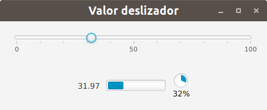

JavaFX
¿Cómo cambia el valor de un deslizador?
Este ejemplo muestra cómo podemos escuchar los cambios en el valor de un deslizador y mostrarlos en una etiqueta, en una barra de progreso y en un indicador de progreso.
Para ello volvemos a añadir un escuchador para los cambios del valor de la propiedad asociada al deslizador mediante el método addListener para poder conocer su nuevo valor y así actuar en consecuencia.
La interfaz para este ejemplo es la que muestro a continuación.

El código asociado a la misma es el que sigue.
package javafx.eventos;
import javafx.application.Application;
import javafx.geometry.Insets;
import javafx.geometry.Pos;
import javafx.scene.Scene;
import javafx.scene.control.Label;
import javafx.scene.control.ProgressBar;
import javafx.scene.control.ProgressIndicator;
import javafx.scene.control.Slider;
import javafx.scene.layout.HBox;
import javafx.scene.layout.VBox;
import javafx.stage.Stage;
public class ValorDeslizador extends Application {
private Slider deslizador;
private ProgressBar pbValor;
private ProgressIndicator piValor;
private Label lbValor;
private void muestraValor(Number valor) {
lbValor.setText(formateNumero(valor));
pbValor.setProgress(valor.doubleValue()/100);
piValor.setProgress(valor.doubleValue()/100);
}
private String formateNumero(Number valor) {
String valorTexto = valor.toString();
String parteEntera = valorTexto.split("\\.")[0];
String parteDecimal = valorTexto.split("\\.")[1];
if (parteDecimal != null) {
if (parteDecimal.length() > 2)
parteDecimal = parteDecimal.substring(0, 2);
else
parteDecimal = parteDecimal.substring(0, 1);
valorTexto = parteEntera + "." + parteDecimal;
} else {
valorTexto = parteEntera;
}
return valorTexto;
}
@Override
public void start(Stage escenarioPrincipal) {
try {
VBox raiz = new VBox(30);
raiz.setPadding(new Insets(20));
raiz.setAlignment(Pos.CENTER);
deslizador = new Slider(0, 100, 50);
deslizador.setShowTickLabels(true);
deslizador.setShowTickMarks(true);
deslizador.setMajorTickUnit(50);
deslizador.setMinorTickCount(4);
deslizador.valueProperty().addListener((observable, oldvalue, newValue) -> muestraValor(newValue));
HBox hbValores = new HBox(10);
hbValores.setAlignment(Pos.CENTER);
lbValor = new Label();
lbValor.setText(50 + "");
pbValor = new ProgressBar(0.5);
piValor = new ProgressIndicator(0.5);
hbValores.getChildren().addAll(lbValor, pbValor, piValor);
raiz.getChildren().addAll(deslizador, hbValores);
Scene escena = new Scene(raiz, 450, 150);
escenarioPrincipal.setTitle("Valor deslizador");
escenarioPrincipal.setScene(escena);
escenarioPrincipal.show();
} catch(Exception e) {
e.printStackTrace();
}
}
public static void main(String[] args) {
launch(args);
}
}